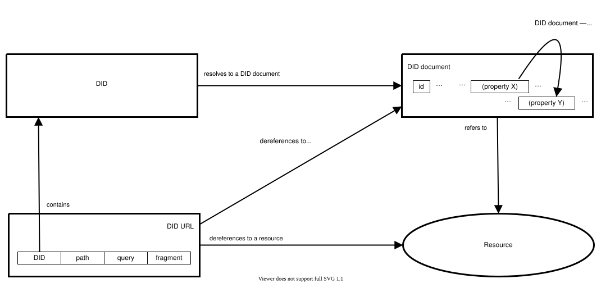
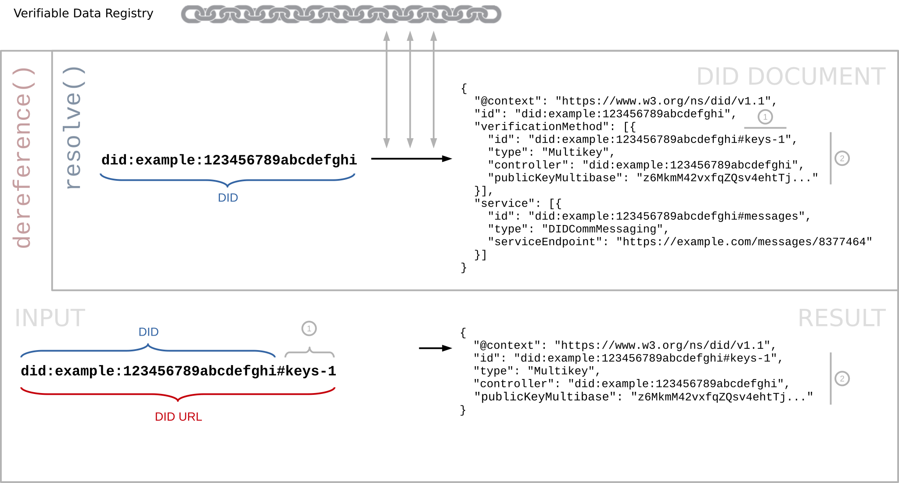

DID URL 解引用
DID URL dereferencing 函数将 DID URL 解引用为一个 resource，其内容取决于 DID URL 的各组成部分，包括 DID method、方法特定标识符、路径、查询和片段。此过程依赖于 DID URL 中包含的 DID 的 DID resolution。DID URL dereferencing 可能涉及多个步骤（例如，当正在解引用的 DID URL 包含片段时），该函数被定义为在所有步骤完成后返回最终资源。下图描述了上述关系。

图的左上部分包含一个黑色轮廓的矩形，标记为"DID"。
图的左下部分包含一个黑色轮廓的矩形，标记为"DID URL"。此矩形包含四个较小的黑色轮廓矩形，水平排列相邻。这些较小的矩形依次标记为"DID"、"path"、"query"和"fragment"。
图的右上部分包含一个黑色轮廓的矩形，标记为"DID document"。此矩形包含三个较小的黑色轮廓矩形。这些较小的矩形标记为"id"、"(property X)"和"(property Y)"，并被多组省略号包围。一条标记为"DID document - relative fragment dereference"的黑色弯曲箭头从标记为"(property X)"的矩形延伸，指向标记为"(property Y)"的矩形。
图的右下部分包含一个黑色轮廓的椭圆形，标记为"Resource"。
一条标记为"resolves to a DID document"的黑色箭头从图左上部分标记为"DID"的矩形延伸，指向图右上部分标记为"DID document"的矩形。
一条标记为"refers to"的黑色箭头从图右上部分标记为"DID document"的矩形延伸，指向图右下部分标记为"Resource"的椭圆形。
一条标记为"contains"的黑色箭头从图左下部分标记为"DID URL"的矩形中标记为"DID"的小矩形延伸，指向图左上部分标记为"DID"的矩形。
一条标记为"dereferences to a DID document"的黑色箭头从图左下部分标记为"DID URL"的矩形延伸，指向图右上部分标记为"DID document"的矩形。
一条标记为"dereferences to a resource"的黑色箭头从图左下部分标记为"DID URL"的矩形延伸，指向图右下部分标记为"Resource"的椭圆形。
所有合规的 DID URL dereferencers 实现以下函数，其抽象形式如下：
dereference(didUrl, dereferenceOptions) →
« dereferencingMetadata, contentStream, contentMetadata »
dereference 函数的输入变量如下：
- didUrl
-
作为单个 字符串的合规 DID URL。这是要解引用的 DID URL。要解引用 DID fragment，必须（MUST）使用包含 DID fragment 的完整 DID URL。此输入是必需的（REQUIRED）。
虽然将任何
didUrl传递给 DID URL 解引用器都是有效的，但实现者应参考 以进一步了解 DID URL 预期如何被解引用的常见模式。 - dereferencingOptions
-
一个元数据结构，包含除
didUrl本身之外的dereference函数的输入选项。此结构在 中进一步定义。此输入是必需的（REQUIRED），但结构可以（MAY）为空。
此函数返回多个值，不对这些值如何一起返回施加限制。dereference 的返回值是
dereferencingMetadata、contentStream 和
contentMetadata。这些值描述如下：
- dereferencingMetadata
-
一个元数据结构，包含与 DID URL dereferencing 过程结果相关的值。此结构是必需的（REQUIRED），在解引用过程中出现错误的情况下，此结构禁止（MUST NOT）为空。此结构在 中进一步定义。如果解引用不成功，此结构必须（MUST）包含描述错误的
error属性。参见 章节。 - contentStream
-
如果调用
dereferencing函数且成功，此值必须（MUST）包含对应于 DID URL 的 resource。contentStream可以（MAY）是可以以一种合规 representations 序列化的 resource（如 DID document）、verification method、service，或通过解析过程可以获取的任何其他可通过媒体类型标识的资源格式。如果解引用不成功，此值必须（MUST）为空。 - contentMetadata
-
如果解引用成功，此值必须（MUST）是一个
元数据结构，但该结构可以（MAY）为空。此结构包含关于
contentStream的元数据。如果contentStream是 DID document，此值必须（MUST）是 DID Resolution 中描述的 didDocumentMetadata 结构。如果解引用不成功，此输出必须（MUST）是一个空的 元数据结构。此结构在 中进一步定义。
合规的 DID URL dereferencing 实现不以任何方式改变这些函数的签名。DID URL dereferencing 实现可以将 dereference 函数映射到方法特定的内部函数以执行实际的 DID URL
dereferencing 过程。DID URL dereferencing 实现可以在此处指定的 dereference 函数之外实现和暴露具有不同签名的额外函数。
DID URL 解引用选项
这是一个元数据结构，包含 DID URL Dereferencing 过程的输入选项。
此结构中可能的属性及其可能的值应当（SHOULD）在 DID Resolution Extensions [[?DID-EXTENSIONS-RESOLUTION]] 中注册。本规范定义了以下常见输入选项：
- accept
-
调用者首选的
contentStream媒体类型。媒体类型必须（MUST）表示为 ASCII 字符串。DID URL dereferencer 实现应当（SHOULD）使用此值来确定返回值中包含的 representation 的contentType（如果支持且可用该 representation）。
- verificationRelationship
- 调用者期望从 DID URL 解引用得到的 verificationMethod 被授权的 verificationRelationship。如果存在，关联值必须（MUST）是一个 ASCII 字符串。如果 DID URL 未解引用到 verificationMethod，或者 DID 文档未为指定的 verificationRelationship 授权该 verificationMethod，则必须（MUST）引发错误。
DID URL 解引用元数据
这是一个元数据结构，包含关于 DID URL Dereferencing 过程的元数据。
此元数据通常在每次调用 DID URL Dereferencing 函数时发生变化，因为它表示解引用过程本身的数据。
此元数据的来源是 DID URL dereferencer。
此结构中可能的属性及其可能的值应当（SHOULD）在 DID Resolution Extensions [[?DID-EXTENSIONS-RESOLUTION]] 中注册。本规范定义了以下常见元数据属性：
- contentType
-
如果解引用成功，返回的
contentStream的媒体类型应当（SHOULD）使用此属性表示。媒体类型值必须（MUST）表示为 ASCII 字符串。 - error
- [[RFC9457]] 中定义的错误数据结构。当解引用过程中出现错误时，此属性是必需的（REQUIRED）。本规范定义的错误可在 章节中找到。其他错误应当（SHOULD）在 DID Resolution Extensions [[?DID-EXTENSIONS-RESOLUTION]] 中注册。
- proof
-
某些 DID resolvers 和 DID URL dereferencers 在执行 DID Resolution 或 DID URL Dereferencing 函数时使用证明。详见 。
DID URL dereferencing 元数据可以（MAY）包含
proof属性。如果存在，其值必须（MUST）是一个 集合，其中每个项目是一个表示证明的 映射。此属性的使用和证明类型与 DID method 无关。
DID URL 内容元数据
这是一个元数据结构，包含关于 DID URL Dereferencing 过程的元数据。
此元数据通常不会在 DID URL Dereferencing 函数的调用之间发生变化，除非内容发生更改，因为它表示关于内容的数据。
此元数据的来源是 DID controller 和/或 DID method。
此结构中可能的属性及其可能的值应当（SHOULD）在 DID Resolution Extensions [[?DID-EXTENSIONS-RESOLUTION]] 中注册。本规范不定义常见属性。
DID URL 解引用算法
以下 DID URL dereferencing 算法必须（MUST）由合规的 DID resolver 实现。根据 [[RFC3986]]，它由以下三个步骤组成：解析 DID；解引用资源；以及解引用片段（仅当输入 DID URL 包含 DID fragment 时）：
解引用资源
- 验证输入 DID URL 是否符合
DID URL 语法的 `did-url` 规则。如果不符合，DID URL dereferencer 必须（MUST）返回以下结果：
- dereferencingMetadata：错误对象，type 设置为 INVALID_DID_URL
- contentStream：
null - contentMetadata：
«[ ]»
- 通过执行 中定义的 DID resolution 算法，获取输入 DID 的 DID document。所有解引用选项和输入 DID URL 的所有 DID 参数必须（MUST）作为解析选项传递给 DID Resolution 算法。
- 如果输入 DID 在 VDR 中不存在，DID URL dereferencer 必须（MUST）返回以下结果：
- dereferencingMetadata：错误对象，type 设置为 NOT_FOUND
- contentStream：
null - contentMetadata：
«[ ]»
- 否则，DID resolution 算法的 didDocument 结果称为已解析的 DID document。
- 如果存在，从输入 DID URL 中分离 DID fragment，并继续使用调整后的输入 DID URL。
- 如果输入 DID URL 不包含 DID path 且不包含 DID query：
did:example:1234
DID URL dereferencer 必须（MUST）按以下方式返回已解析的 DID document 和已解析的 ：- dereferencingMetadata：
«[ ... ]» - contentStream：
已解析的 DID 文档 - contentMetadata：
«[已解析的 DID 文档元数据]»
- dereferencingMetadata：
- 如果输入 DID URL 包含
DID 参数
hl：did:example:1234?hl=zQmWvQxTqbG2Z9HPJgG57jjwR154cKhbtJenbyYTWkjgF3e
TODO: 指定处理 `hl` DID 参数的算法。
- 如果输入 DID URL 包含
DID 参数
service和/或 DID 参数serviceType，以及可选的 DID 参数relativeRef：did:example:1234?service=files&relativeRef=%2Fmyresume%2Fdoc%3Fversion%3Dlatest
- 从已解析的 DID document 中，选择满足以下条件的所有
services：
- 如果输入 DID URL 包含
DID 参数
service： 如果 service 的id属性与serviceDID 参数的值匹配，则选择该服务。如果id属性或serviceDID 参数或两者都包含相对引用，则必须（MUST）根据 RFC3986 第 5 节：引用解析和 [[[DID-CORE]]] 中 相对 DID URL 章节中指定的规则解析并使用对应的绝对 URI 来确定匹配。 - 如果输入 DID URL 包含
DID 参数
serviceType： 如果 service 的type属性与serviceTypeDID 参数的值匹配，则选择该服务。
- 如果输入 DID URL 包含
DID 参数
- 如果输入 DID URL 包含
DID 参数
relativeRef：- 对每个所选 service：
- 如果所选 service 的
serviceEndpoint属性值是一个 映射，跳过此所选 service。 - 如果所选 service 的
serviceEndpoint属性值是一个 字符串，将此值添加到所选 service endpoint URL 列表中。 - 如果所选 service 的
serviceEndpoint属性值是一个 集合，将其中所有 字符串项添加到所选 service endpoint URL 列表中。
- 如果所选 service 的
- 对每个所选 service endpoint URL，按以下方式执行 RFC3986 第 5 节：引用解析中指定的算法：
- 基础 URI 值为所选 service endpoint URL。
- 相对引用为
DID 参数
relativeRef的值。 - 将所选 service endpoint URL 更新为"引用解析"算法的结果。
解析 service endpoint——特别是当它是 DID 时——可能导致 resolution cycle（解析循环），即一组导致无限循环的步骤。例如，service endpoint 可能通过一系列解析间接指回先前已解引用的标识符。递归解析 service endpoint 的 DID resolver 应检测并处理此类循环，以防止无限循环或解析失败。进一步指导请参见 解析循环章节。
- 对每个所选 service：
- 如果 accept 输入 DID 解引用选项缺失，或其值为 DID document 的 representation 的媒体类型：
- 将已解析的 DID document 中的 services 更新为仅包含所选 services。
- 返回以下结果：
- dereferencingMetadata：
«[ ... ]» - content：
包含所选服务的已解析 DID 文档 - contentMetadata：
«[已解析的 DID 文档元数据]»
- dereferencingMetadata：
- 如果 accept 输入 DID 解析选项的值为 text/uri-list：
- 返回以下结果：
- dereferencingMetadata：
«[ ... ]» - content：
« 所选服务端点 URL » - contentMetadata：
«[ "contentType" → "text/uri-list", ... ]»
- dereferencingMetadata：
- 返回以下结果：
- 否则，返回以下结果：
- dereferencingMetadata：错误对象，type 设置为 REPRESENTATION_NOT_SUPPORTED
- content：
null - contentMetadata：
«[ ]»
- 从已解析的 DID document 中，选择满足以下条件的所有
services：
- 否则，如果输入 DID URL 包含 DID path 和/或 DID query：
did:example:1234/custom/path?customquery
- 如果此算法、适用的 DID method、扩展规范或客户端都无法解引用输入 DID URL，返回以下结果：
- dereferencingMetadata：错误对象，type 设置为 NOT_FOUND
- contentStream：
null - contentMetadata：
«[ ]»
解引用片段
如果输入 DID URL 包含 DID fragment，则片段的解引用取决于资源的媒体类型（[[RFC2046]]），即 的结果。
- 如果 的结果是输出 DID document，且输入 DID URL 解引用选项包含
verificationRelationship选项：-
令 verificationRelationship 为
verificationRelationship选项的值。 - 令 verificationMethod 为根据 DID 文档媒体类型的规则从输出 DID document 中解引用 DID fragment 的结果。
- 如果 verificationMethod 不是 合规验证方法，必须（MUST）引发错误，且应当（SHOULD）传达错误类型 INVALID_VERIFICATION_METHOD。
- 如果 verificationMethod 未通过引用（URL）或通过值（对象）与输出 DID document 中由 verificationRelationship 标识的 验证关系数组关联，必须（MUST）引发错误，且应当（SHOULD）传达错误类型 INVALID_RELATIONSHIP_FOR_VERIFICATION_METHOD。
- 返回 verificationMethod。
-
令 verificationRelationship 为
- 如果 的结果是所选 service endpoint URL，且输入 DID URL 包含 DID fragment：
did:example:1234?service=files&relativeRef=%2Fmyresume%2Fdoc%3Fversion%3Dlatest#intro
- 如果所选 service endpoint URL 包含
fragment组件，引发错误。 - 将 DID fragment 附加到所选 service endpoint URL。换言之，所选 service endpoint URL"继承"了输入 DID URL 的 DID fragment。
- 返回所选 service endpoint URL。
- 如果所选 service endpoint URL 包含
- 否则，按资源的媒体类型（[[RFC2046]]）定义的方式解引用 DID 片段。例如，如果资源是媒体类型为
application/did的 DID 文档表示，则片段按与 JSON-LD 1.1: application/ld+json 媒体类型 [JSON-LD11] 关联的规则处理。
此 DID fragment 的使用与 [[RFC3986]] 中片段标识符的定义一致。它标识的是次要资源，是主要资源（DID document）的子集。
DID fragment 的此行为类似于 HTTP URL 中片段的处理方式，即当解引用它返回带有 Location 头的 HTTP 3xx（重定向）响应时（参见 [[RFC7231]] 第 7.1.2 节）。
示例
示例：解引用到验证方法
给定以下输入 DID URL：
did:example:123456789abcdefghi#keys-1
... 以及以下已解析的 DID document：
{
"@context":[
"https://www.w3.org/ns/did/v1.1",
"https://didcomm.org/messaging/contexts/v2",
"https://identity.foundation/linked-vp/contexts/v1"
],
"id": "did:example:123456789abcdefghi",
"verificationMethod": [{
"id": "did:example:123456789abcdefghi#keys-1",
"type": "Multikey",
"controller": "did:example:123456789abcdefghi",
"publicKeyMultibase": "z6MkmM42vxfqZQsv4ehtTjFFxQ4sQKS2w6WR7emozFAn5cxu"
}],
"service": [{
"id": "did:example:123456789abcdefghi#messages",
"type": "DIDCommMessaging",
"serviceEndpoint": "https://example.com/messages/8377464"
}, {
"id": "did:example:123456789abcdefghi#linkedvp",
"type": "LinkedVerifiablePresentation",
"serviceEndpoint": "https://example.com/verifiable-presentation.jsonld"
}]
}
{
"@context": "https://www.w3.org/ns/did/v1.1",
"id": "did:example:123456789abcdefghi#keys-1",
"type": "Multikey",
"controller": "did:example:123456789abcdefghi",
"publicKeyMultibase": "z6MkmM42vxfqZQsv4ehtTjFFxQ4sQKS2w6WR7emozFAn5cxu"
}

示例：解引用到服务端点 URL
给定以下输入 DID URL：
did:example:123456789abcdefghi?service=messages&relativeRef=%2Fsome%2Fpath%3Fquery#frag
... 以及上一节中相同的已解析的 DID document。
... 则 算法的结果为以下所选 service endpoint URL：
https://example.com/messages/8377464/some/path?query#frag